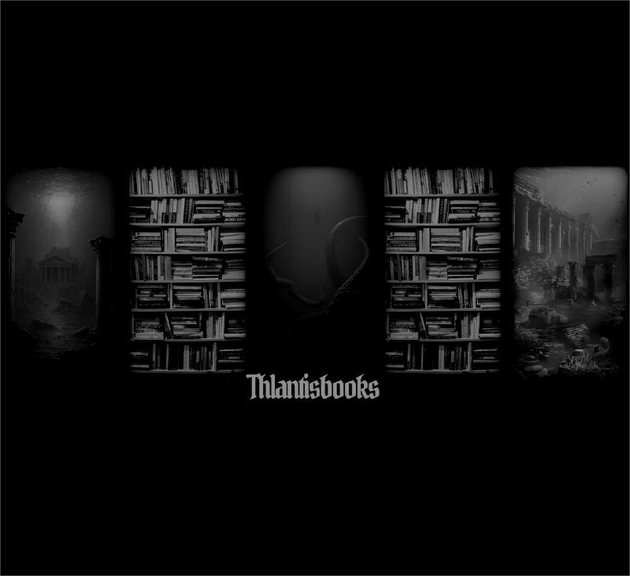

¿Estás trabajando y necesitas ruido de fondo? En Thlantis tenemos historias que te estremecerán. Descubre tu próxima lectura aquí:
Saber másUna noche de tragos, siete amigos y un cadáver, ¿Que puede salir mal?
Edgar Allan PoeEl relato de un demonio ante una tumba, no puedes esperar.
Edgar Allan PoeUn hombre termina en una casa abandonada y encuentra la imagen de una mujer hermosa.
Edgar Allan PoeUn ensayo fundamental del feminismo.
Virginia WoolfUna habitación propia de Virginia Woolf es un ensayo fundamental del feminismo que argumenta que las mujeres necesitan independencia económica (500 libras al año) y un espacio físico y mental propio (una habitación) para poder crear literatura y desarrollar su potencial intelectual, algo que históricamente se les ha negado debido a las limitaciones sociales, económicas y educativas impuestas por el patriarcado.
Virginia Woolf comienza su relato en la ficticia universidad de Oxbridge, reflexionando sobre la exclusión material femenina.
La autora investiga en la Biblioteca Británica y descubre con frustración que la historia fue escrita por hombres.
A través de la trágica historia de Judith Shakespeare, demuestra cómo el genio femenino estaba condenado.
Woolf analiza la literatura femenina del siglo XIX, destacando cómo ocultaban manuscritos ante los prejuicios.
¿Tienes alguna pregunta, comentario o sugerencia? Nos encantaría saber de ti.
Contáctanos
Visitanos en Spotify